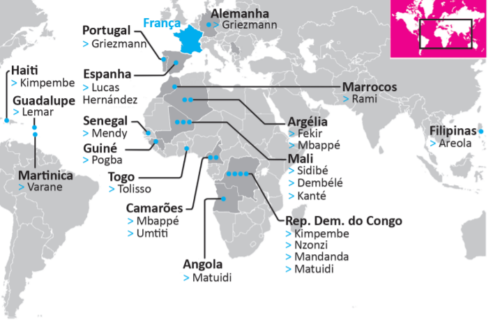

A seleção francesa participante da Copa do Mundo de Futebol de 2018, composta de 19 jogadores filhos de imigrantes da África e de outros países da Europa, foi mais multicultural que o elenco campeão da Copa de 1998. Apenas o goleiro Lloris, o lateral Pavard, o atacante Giroud e o meia Thauvin não se encaixam nessa descrição. Tal composição suscitou inúmeros debates acerca da presença de imigrantes na sociedade francesa e do multiculturalismo na Europa. À perspectiva multicultural se contrapõem a xenofobia, o racismo, a islamofobia, entre outras formas de segregação humana, sobretudo de imigrantes e seus descendentes.
Disponível em: https://www1.folha.uol.com.br/esporte/2018/07/multiculturais-franca-e-belgica-buscam-unidade-nacional-na-copa.shtml. Acesso em: 10 jul. 2018 (adaptado).
A. A admiração dos torcedores pelos jogadores da seleção francesa evidencia a redução do preconceito de cidadãos franceses contra descendentes de imigrantes.
B.O aumento do número de jogadores filhos de imigrantes e a ampliação da diversidade de nacionalidades ameaçam a perpetuação dos valores e da tradição do povo francês.
C. A inclusão de jogadores de origem árabe e africana na seleção francesa teve o efeito imediato de minimizar visões e interpretações equivocadas dos efeitos da imigração, como desemprego e pobreza.
D. A inclusão de jogadores de origem árabe e africana na seleção francesa teve o efeito imediato de minimizar visões e interpretações equivocadas dos efeitos da imigração, como desemprego e pobreza.E. A composição da seleção francesa aponta para a importância da perspectiva multicultural, em que se valorizam as formas de convívio entre os diferentes, a mediação de conflitos identitários e o exercício da alteridade.
Fonte: As questões desse simulado foram obtidas na prova disponibilizada no site do INEP - Instituto Nacional de Estudos e Pesquisas Educacionais Anísio Teixeira.
Créditos: Inep - Enade
Créditos de imagem: ENADE - Tecnologia em Logística, 2018.